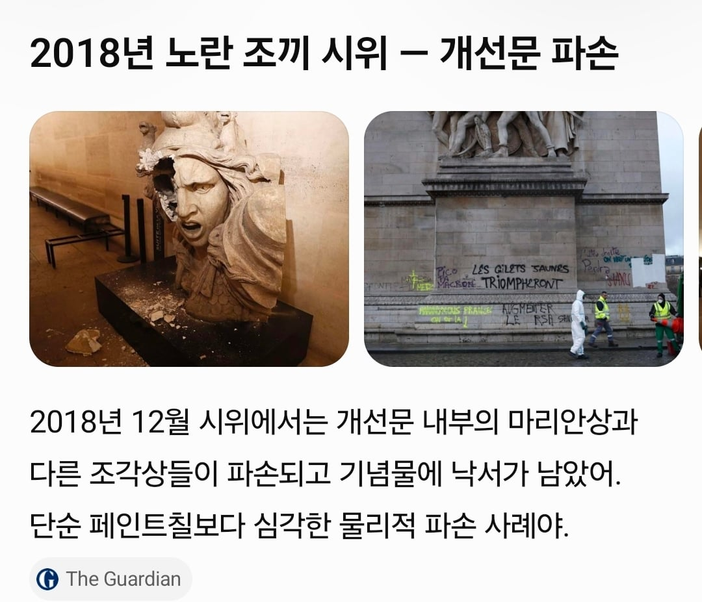
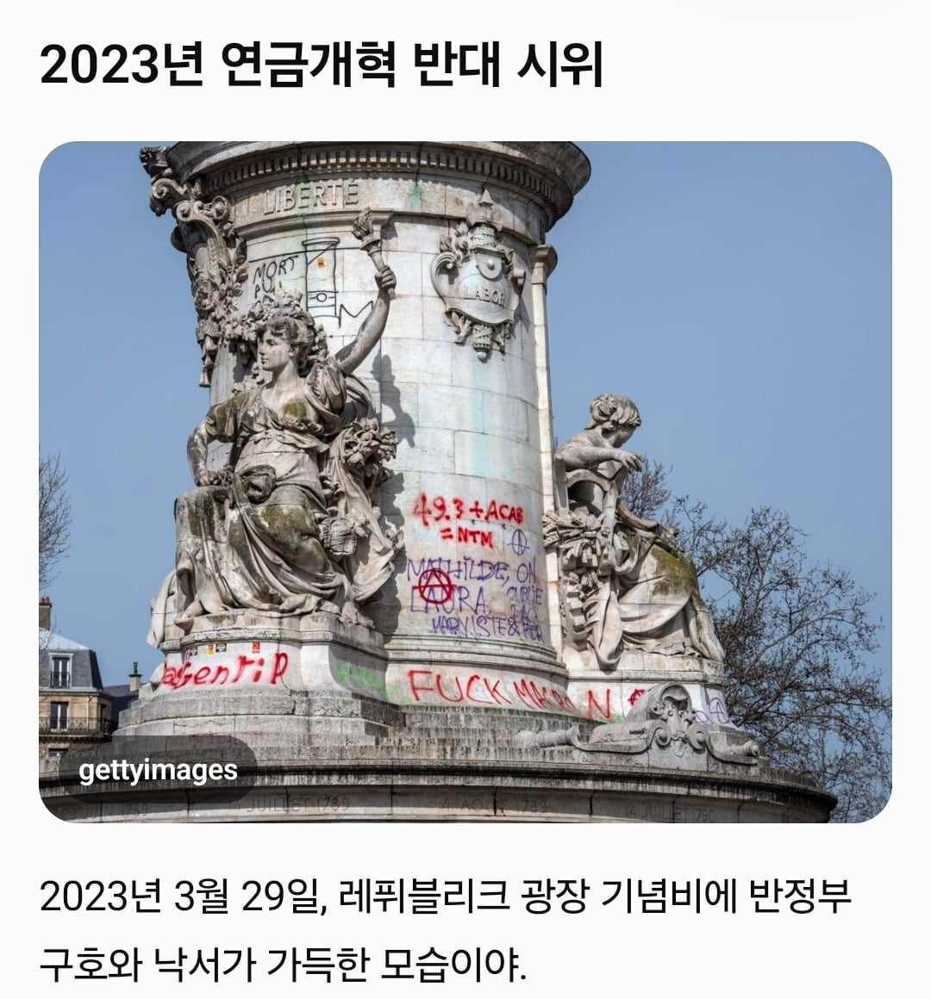
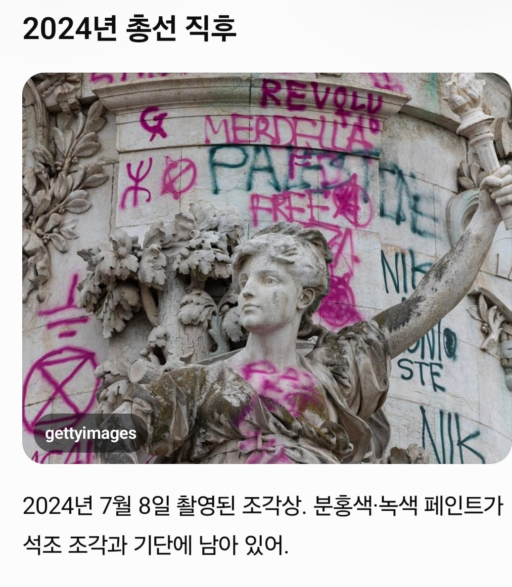

무슬림 난민들이 만든 결과라는데



걍 전통임
무슬림 난민들이 만든 결과라는데



걍 전통임
애초에 저 기념비 일주일에 3~4번, 심하면 매일 낙서 피해를 입는다고함
그 1800년도부터 맘에 안들면 목따는게 전통이였는데?
사실 우리가 세계기준에서 시위주변 상업이 활성화되는 좀 이상한 사람들인거고 대형시위는 폭동약탈무질서와 함께하는게 디폴트긴해...
생각해보면 오히려 우리가 특이한 경우같음.
애초에 1789년, 1830년, 1848년, 1968년, 1995년, 2006년, 2018년, 2023년 내내 잘만 깨부쉈음 ㅋㅋㅋㅋ
선동은 사람들 마음속에 뭘 집어넣는 게 아니라, 이미 들어있는 걸 밖으로 끄집어내는 거임
오... 좋은말인듯
크 그렇지 그냥 그렇게 생각하던걸 확인시켜주는 용이지

확증편향을 강화시키는건가
매장 약탈하는 사람들 중에 백인이 없는 것도 우리들의 마음 속에 들어있는 것 때문에 발생한 착시인 거구나!
그래그래 백인은 도둑질이나 약탈을 안하는구나
백인? 약탈 사진이나 동연상 보면 떡하니 있었잖아? 애초에 좀 이상하게 알고있는거같은데 프랑스는 난민유입이전부터 다민족 국가였음
오........
걍 커뮤는 이제 혐오가 만연해서 팩트가 중요한 게 아님
닥터 프로스트 만화 마지막 에피소드가 현실이 될 날이 곧 올 거임
듣고보니 그렇긴하네 특정 인종문제라기 보다는 원래 저런 애들이 모인 나라였긴 함
지랄말고 도파민에 선동 좀 섞어서 가져와라
맛잘알
저 낙서 수성이라고 하던데 ㅋㅋㅋㅋㅋ
뭐야 유럽판 문화대혁명임?
정정당당히 선동과 날조로 승부하자!!!
파괴하고 이런게 문제가 아니라 어느나라 국기가 흔들리냐가 문제였던거 아니었어?
무슬림 난민은 선동이 필요하긴함
문제가 된다고 생각하는 대상이면 허위사실을 유포해도 된다라... 너무 생각이 짮은거같은데

전통이어도 누가 하느냐에 따라 달라지는거지 계속 프랑스인들이 했으면 이번것도 전통맞는데 무슬림이 한거니 이건 다름 침략임
제미나이로 '프랑스 대규모 시위 난민 펙트체크' 이렇게 검색해봤는데 일단 이렇게 나옴. 물론 어느정도 정보오염이 됐을 가능성도 염두해야겠지만 그걸 감수해도 지금 대규모 시위는 무슬림, 난민이슈랑은 딱히 관련없는거같음. 거기에 개드립에서 봤던 상점 돼지고기 안털렸다느니하는 시위관련 난민글도 전부 루머라고 나옴.
프랑스에서 발생한 대규모 시위 및 폭동과 관련하여, 온라인상에 퍼진 "난민 및 무슬림 이민자가 시위와 파괴 행위의 주동자"라는 주장은 사실이 아닙니다.
프랑스 당국과 글로벌 팩트체크 기관들의 조사 결과를 바탕으로 한 핵심 사실 검증은 다음과 같습니다.
1. 시위의 진짜 원인: '공교육 환경'과 '고물가'
이번 시위의 근본적인 촉발 원인은 이민자 문제가 아닙니다.
• 시위의 발단: 지난 9월 말, 교사 부족, 과밀 학급, 노후화된 교육 시설 등 열악한 공교육 환경 개선을 요구하는 고등학생들의 시위로 시작되었습니다.
• 시위의 확산: 여기에 유가 및 생활비 급등에 항의하는 노동조합과 '노란 조끼' 운동이 결합하면서 전국적인 대규모 반정부 시위로 확대되었습니다.
2. "이민자·난민이 폭동 주도" 주장의 진위 (거짓 ❌)
도널드 트럼프 미국 대통령 등 일부 해외 정치인과 극우 진영에서 "무슬림 이민자들이 파괴 행위의 주범"이라고 주장했으나, 이는 근거가 없는 발언입니다.
• 당국 오피셜: 프랑스 경찰과 내무부는 폭력 및 약탈 사태를 특정 이민자 집단이나 난민과 연관 짓지 않았습니다. 프랑스 정부는 파괴 행위의 배후로 '극좌 진영' 및 일부 기회주의적 범죄자들을 지목했습니다.
• 참가자 구성: 외신 보도에 따르면 시위 참가자는 학생, 노동자, 일반 시민 등 프랑스 사회의 다양한 계층으로 구성되어 있습니다.
3. 소셜 미디어(SNS) 유포 가짜뉴스 사례
온라인상에서 반(反)이민자 및 반무슬림 정서를 자극하기 위해 생성형 AI와 조작된 이미지가 조직적으로 유포되었습니다. 대표적인 거짓 사례는 다음과 같습니다
3. 왜 '난민 배후설'이 확산되는가?
프랑스 시위가 격해지며 일부 과격 세력(블랙 블록 등)에 의한 상점 약탈과 방화 같은 폭력 사태가 발생하자, 유럽 내 극우 정치권과 반(反)이민 성향의 네티즌들이 이를 난민과 이민자 통합 실패의 프레임으로 엮어 여론을 호도하고 있기 때문입니다. 미국의 도널드 트럼프 등 일부 해외 정치인들까지 가세해 이를 이민자 국경 문제와 연결 짓고 있으나, 현지 치안 당국과 언론의 확인 결과 이번 사태의 본질은 프랑스 내부의 누적된 경제적 불평등과 긴축 재정에 대한 시민들의 폭발입니다
난민 저격 반박글 오랜만에보내
보통은 다 진짜엿는데
일부가 너무 폭력적임
프랑스가 2018년 이전부터 무슬림 난민 받고 있었으니까 어찌됬건 난민 받고 난 뒤에 발생한 문제로 좋았어!
다른 사이트였긴한데 어쨌든 제목은 난민인데 내용은 난민이 아닌것도 있어서 반박했더니 반대 오지게 박히고 난민받는거 찬성이냐고 몰아가더라
그래도 저 락카는 지워지는 거라면서
기독교일때는 지들끼리 안죽였나 ㅋㅋㅋ